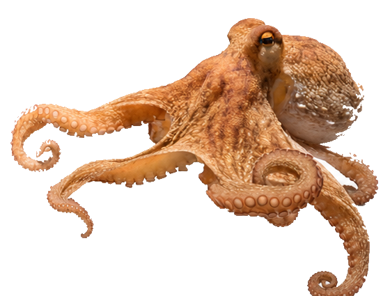

Reference record.
0%
Group-stage accuracy
0%
Knockout accuracy
0/0
Upset calls hit
0
Proof-verified picks
This site is for entertainment and reference only. PAUL predictions are not betting or financial advice.
PAUL Record
Public accuracy, tracked match by match.
Every locked pick is counted after the final score. The record stays public, proof-linked, and consistent for every visitor.
Reference record.
Extra correct picks.
Actual accuracy vs confidence.
PK Predictor
Group-stage record first, knockout oracle after qualification.
PAUL still predicts every playable match before kickoff, including the group stage. The public showpiece begins when the Round of 32 bracket is resolved and every pick becomes a win-or-go-home call.
Select a match

2026 Match Trace
Follow PAUL against the market, match by match.
This public trace shows the current PAUL read, market reference when available, final result after sync, and the match-by-match impact versus the market favorite.
Loading the 2026 match trace...
Automation Engine
Daily odds refresh, result sync, bracket advancement, and pre-match predictions.
Vercel Cron refreshes market odds snapshots, checks for final scores, records winners, fills the next knockout round, locks PAUL predictions before each playable match, and keeps the public accuracy record consistent for every visitor.
0
Locked predictions
0
Synced results
0%
Prediction accuracy
Pending
Next scheduled pick
Loading automation status...
Proof of Prediction
Every PAUL pick gets a public hash and timestamp proof.
When PAUL locks a prediction, the full prediction payload is converted into canonical JSON and hashed with SHA-256. Official proofs also try to create an OpenTimestamps .ots receipt, so anyone can verify the same hash outside this site.
0
Total proofs
0
Group stage
0
Knockout
0
OTS receipts
No locked proofs yet.
No locked proofs yet
Proof records will appear here as soon as PAUL locks an official prediction.
Public Proof Verifier
Verify a PAUL proof yourself.
Paste proof JSON from any card. The browser recalculates SHA-256 locally, checks canonical consistency, and shows GitHub/OpenTimestamps evidence.
No proof loaded.
Dry-Run Verification
Test the whole pipeline before the tournament starts.
This private area checks result providers, full bracket simulation, and proof hashing. It never writes production predictions, results, or audit records.
Private owner verification is locked.
48-Team Field
Groups A-L
Each team card includes its flag, group, and local-language line for the PK page.